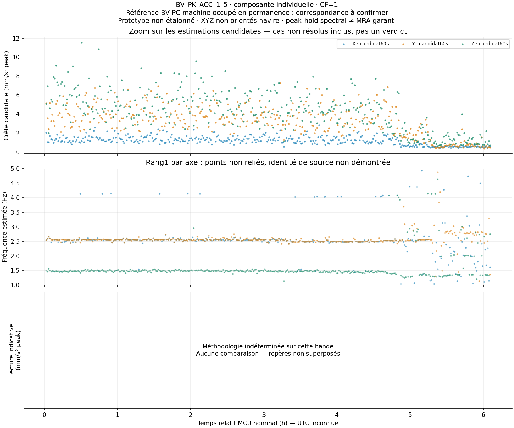
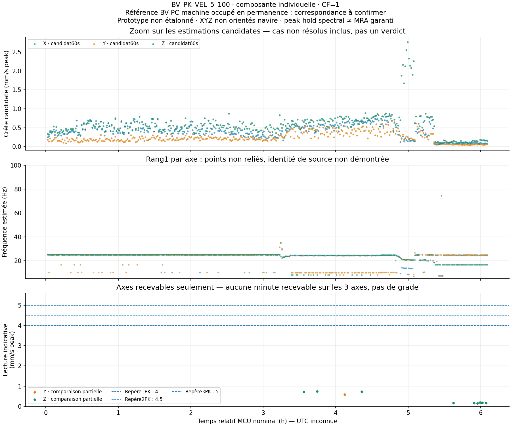

La comparaison globale PK reste indéterminée. La bande1–5Hz n'offre ici aucune composante suffisamment robuste selon les contrôles retenus. En vitesse, quelques fenêtres-axes sont recevables, mais aucune minute ne l'est sur les 3 axes. Aucun grade ou jugement de confort n'est attribué.4.8 mm/s² peakMédiane du maximum spectral candidat par minute
BV_PK_ACC_1_5 · cas non résolus inclus
0 fenêtres-axes recevables ; aucune minute sur les 3 axes.
0.5 mm/s peakMédiane du maximum spectral candidat par minute
BV_PK_VEL_5_100 · cas non résolus inclus
11 fenêtres-axes recevables ; aucune minute sur les 3 axes.
Comprendre les deux repères
Une crête de composante décrit l'amplitude d'une vibration quasi sinusoïdale à une fréquence précise. Ce n'est pas la crête instantanée du signal total ni √2 fois son RMS global. Entre 1 et 5 Hz, on examine l'accélération ; entre 5 et 100 Hz, la vitesse de la composante est calculée en divisant son accélération par 2πf.
Référence : BV NR467F juillet2026, chapitre6 section3 tableaux5/6, PC machine occupé en permanence à la mer, correspondance réelle à confirmer. Montage au double-face, sensibilité nominale et axes non repérés rendent les comparaisons strictement indicatives et non normatives.
BV_PK_ACC_1_5
Unité : mm/s² peak, composante individuelle. Repères contextuels : 1PK 125 ; 2PK 141 ; 3PK 157. Ces chiffres ne sont pas ceux d'un RMS large bande.

BV_PK_VEL_5_100
Unité : mm/s peak, composante individuelle. Repères contextuels : 1PK 4 ; 2PK 4.5 ; 3PK 5. Ces chiffres ne sont pas ceux d'un RMS large bande.

Pourquoi les réserves ?
On confronte60s et six sous-fenêtres de 10 s, avec Hann corrigé et estimation de fréquence entre les bins. Un second calcul ajuste une sinusoïde dans le temps. Modulation, raies proches, faible contraste, frontières de bande et divergences sont conservés, pas forcés dans une classe rassurante. En accélération, un contrôle réel diverge d'environ31 % : sa valeur reste candidate. Quelques composantes de vitesse concordent dans les limites fixées, sans prouver un confort du local.
Le maximum de pics spectraux courts n'est pas une mesure garantie du maximum répétitif d'un signal modulé. Une valeur faible non résolue ne permet pas de conclure «sous seuil».